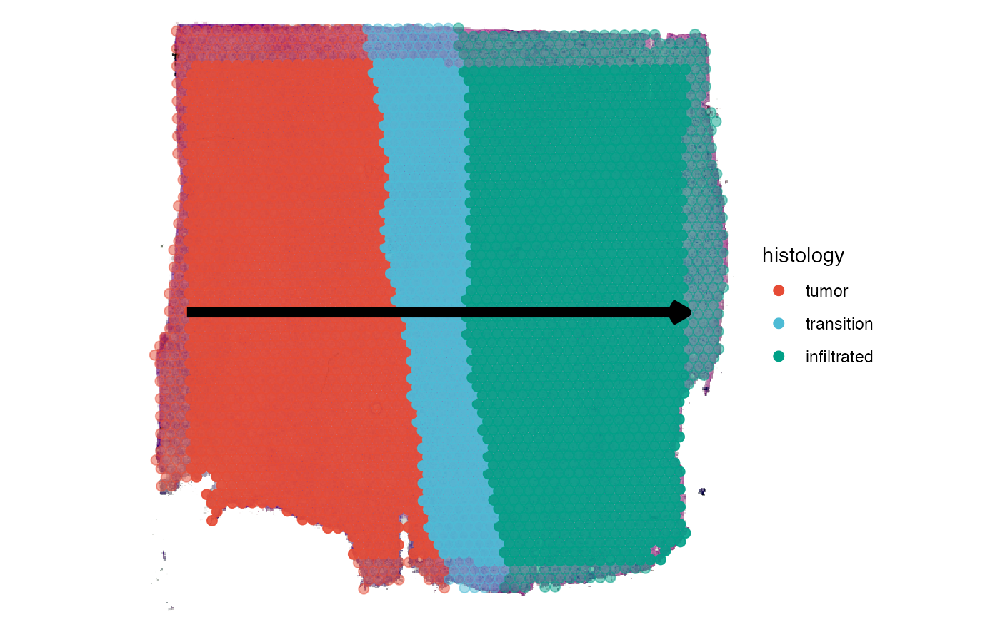

Spatial Trajectories
creating-spatial-trajectories.Rmd1. Introduction
With spatial trajectory analysis SPATA2 introduces a new approach to find, analyze and visualize differently expressed genes and gene-sets in a spatial context. While the classic differential gene expression analyzes differences between experimental groups as a whole it neglects changes of expression levels that can only be seen while maintaining the spatial dimensions. Spatial trajectories allow to answer questions that include such a spatial component. E.g.:
- In how far do expression levels change the more we move towards a region of interest?
- Which genes follow the same pattern along these paths?
The spatial trajectory tools provided in SPATA2 enable new ways of visualization as well as new possibilities to screen for genes. As an example we are using a spatial transcriptomic sample of a central nervous system malignancy that features three different, adjacent histological areas: Tumor, a transition zone as well as infiltrated cortex.
# load required packages
library(SPATA2)
library(SPATAData)
library(tidyverse)
# load SPATA2 inbuilt example data
object_t269 <- loadExampleObject(sample_name = "UKF269T", process = TRUE, meta = TRUE)
# histology only
plotSurface(object_t269, pt_alpha = 0)
# colored by histological classification
plotSurface(object_t269, color_by = "histology")

2. Creating spatial trajectories
Spatial trajectories can be added to the SPATA2 object
via two functions, namely createSpatialTrajectories() and
addSpatialTrajectory(). The animation below shows the
interface of createSpatialTrajectories(). To draw a
trajectory double click on the surface plot to mark the trajectory’s
starting point and then double click again to mark the endpoint. The
result should look somewhat like the trajectory drawn in the figure
below the animation.
# make sure to store the output in the object with <-
object_t269 <- createSpatialTrajectories(object = object_t269)
If you are satisfied with the course of the trajectory determine the
width of the trajectory’s scope on the left and click
on highlight. note that the width parameter can always be adjusted
afterwards. Then enter a valid ID with which you want to name the
trajectory and click on ‘Save Trajectory’. Make sure to click on ‘Close
Application’ when you want to return in order to save the results in the
returned SPATA2 object.
Instead of drawing the spatial trajectory you can add it directly by
explicitly naming its course via start- and endpoint using the function
addSpatialTrajectory().
# define start and end positions of the trajectory directly
# by default, the width equals the trajectory length
object_t269 <-
addSpatialTrajectory(
object = object_t269,
id = "horizontal_mid",
start = c("1.5mm", "4mm"),
end = c("6.5mm", "4mm"),
overwrite = TRUE
)The area of the sample that is eventually included when the
trajectory is used to obtain a gradient is defined by the length of the
trajectory and the width parameter. Whether created
interactively or manually with code, a default for the
width parameter is set. We recommend to stick to a
width parameter equal to the length of the trajectory which
is the default for addSpatialTrajectory().
getTrajectoryWidth(object_t269, id = "horizontal_mid")## [1] 372.0484
## attr(,"unit")
## [1] "px"
getTrajectoryLength(object_t269, id = "horizontal_mid")## [1] 372.0484
## attr(,"unit")
## [1] "px"
# created with code
plotSpatialTrajectories(
object = object_t269,
ids = "horizontal_mid",
color_by = "histology"
)